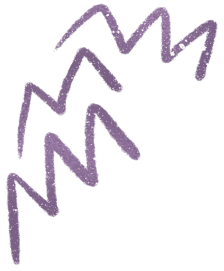

Allons plus loin
Tu viens de voir un exemple où seul le quadriceps et l’ischio-jambier sont illustré, mais souviens toi
que pour sauter tous les muscles de la jambe, du fessier jusqu’au pied, interviennent. Tu peux aussi
ajouter les muscles du tronc qui te donne de la stabilité et les muscles des bras que tu balances pour
te donner de l’élan.
Revenons à notre modèle à deux muscles, imaginer les membres inférieurs comme un ressort est
une façon simple de comprendre le squat jump, mais cela n'explique pas tout. En réalité, les muscles
ont différentes façons de se contracter.